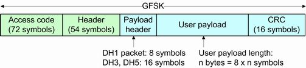

Trace Points for Basic Rate
The number of time domain trace points for BR packets ("PvT", "Freq. Dev.") depends on the packet type and the payload length. The traces cover the whole burst plus 160 symbols before the symbol 0 and 100 symbols after the last symbol in the burst.
The number of time domain trace points for EDR packets in "PvT" traces is identical with BR traces.
The BR packets consist of the following fields:

Content of BR packets
The number N of symbols in the burst can be read from the figure above: N = 150 + 8*n for DH1 packets, N = 158 + 8 * n for DH3 and DH5 packets. With a fixed oversampling factor of 4, the number m of trace points is equal to:
m = 4*(100 + N + 100) = 800 + 4*N